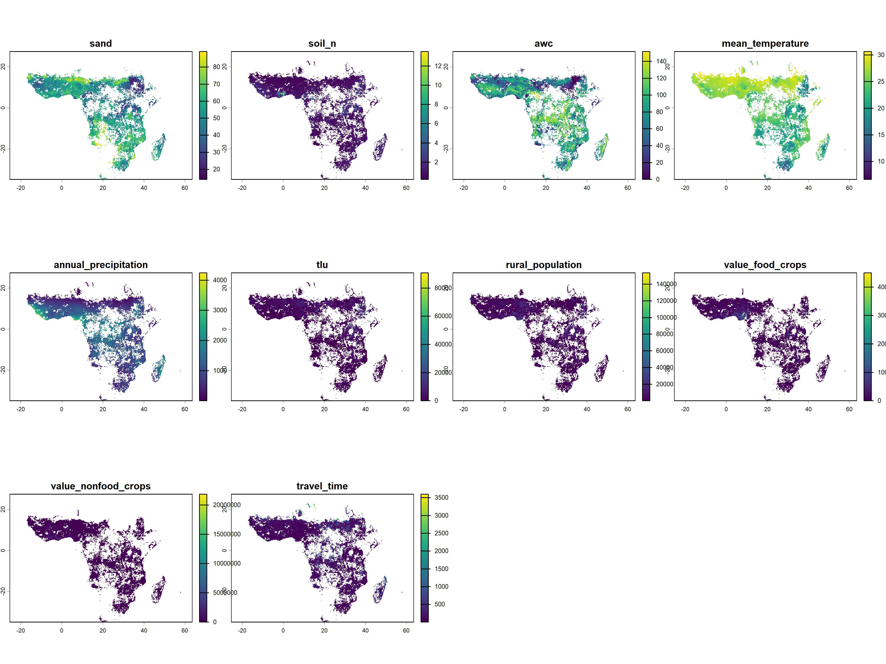
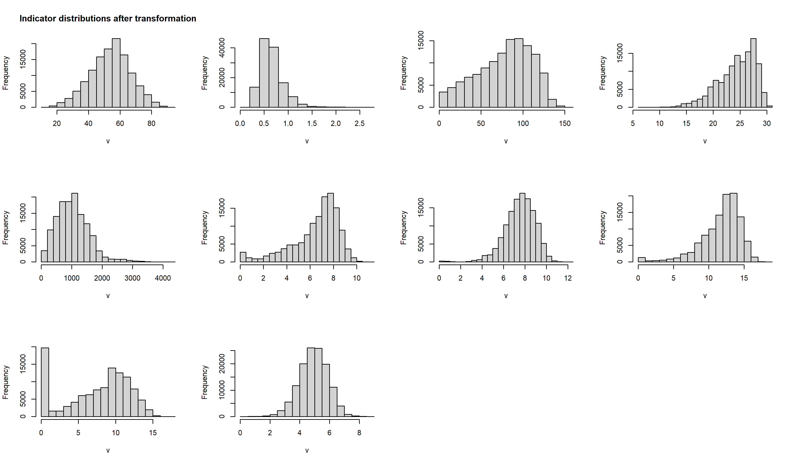
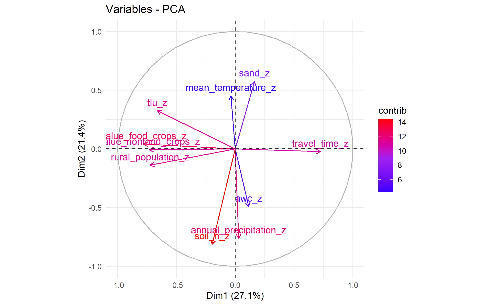
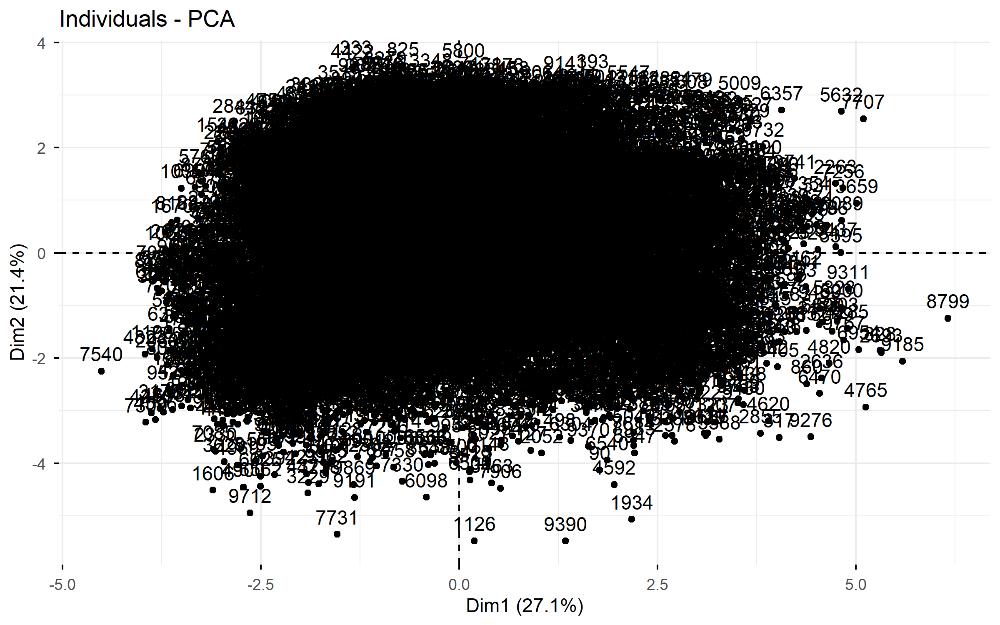
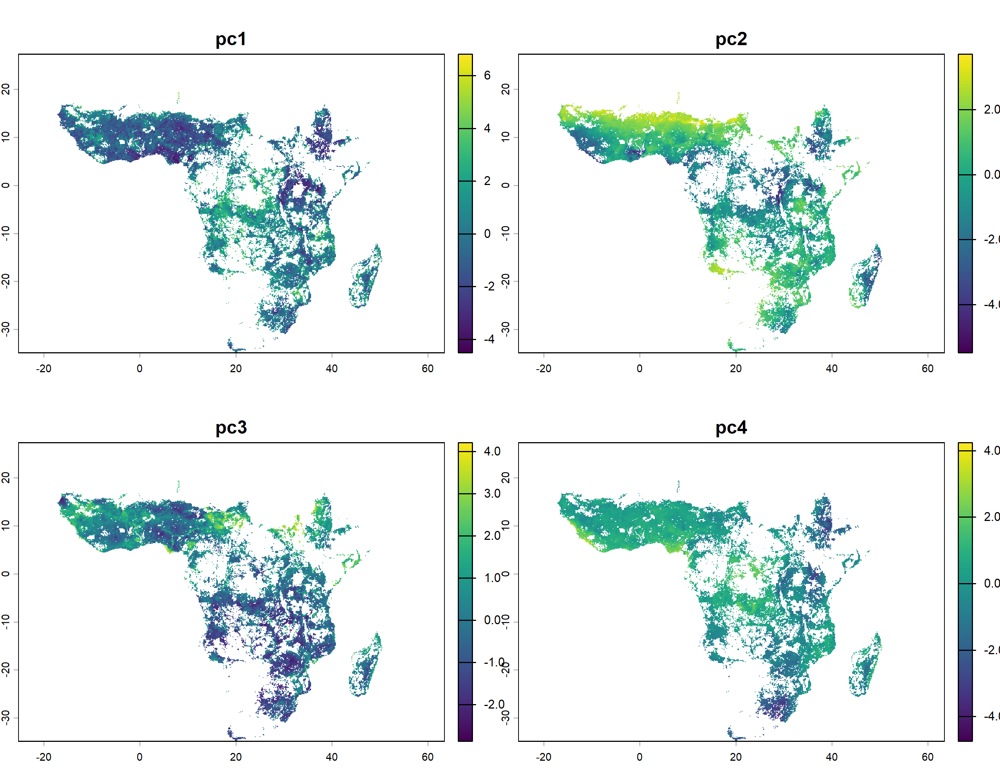
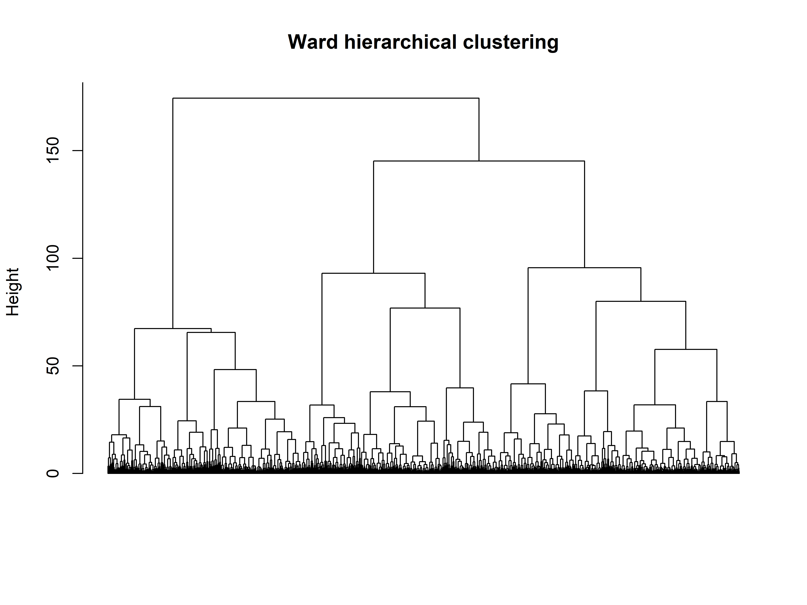
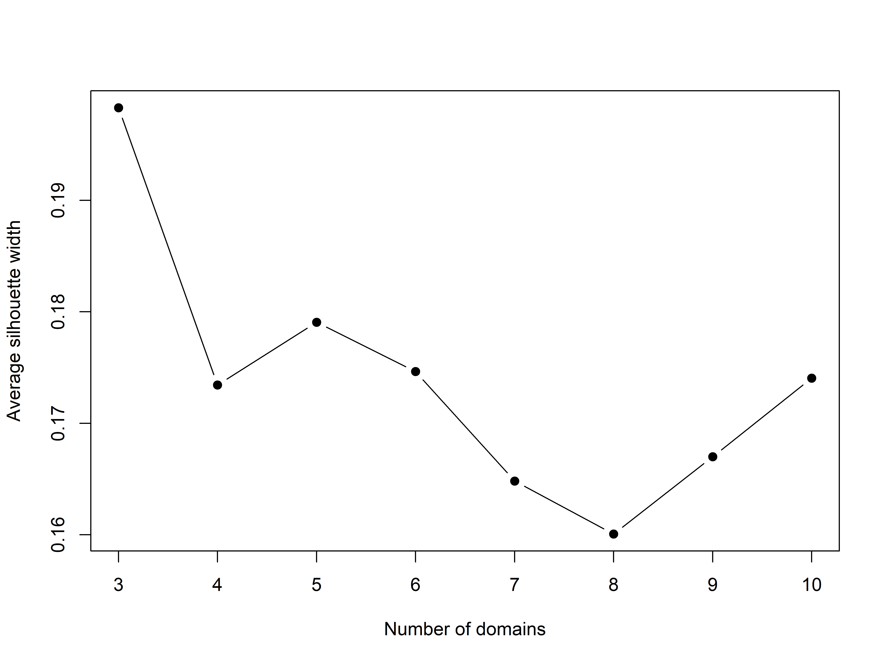
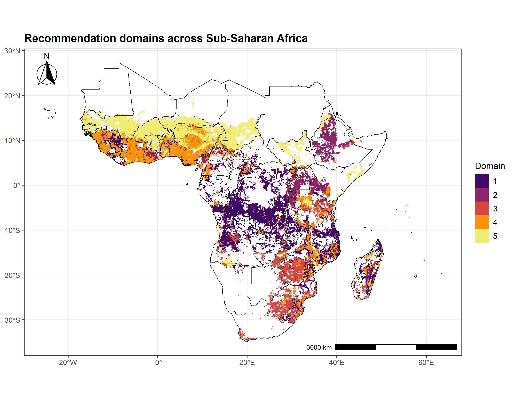
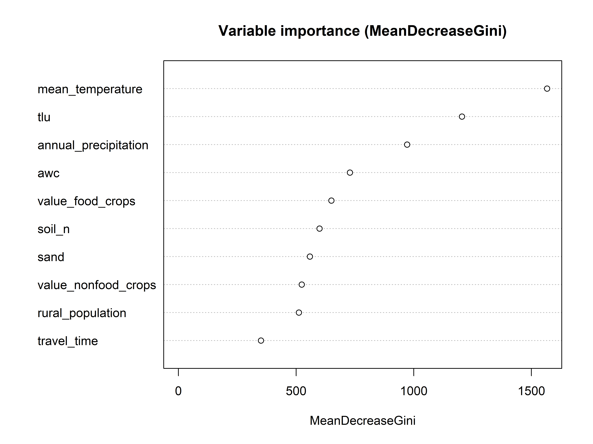
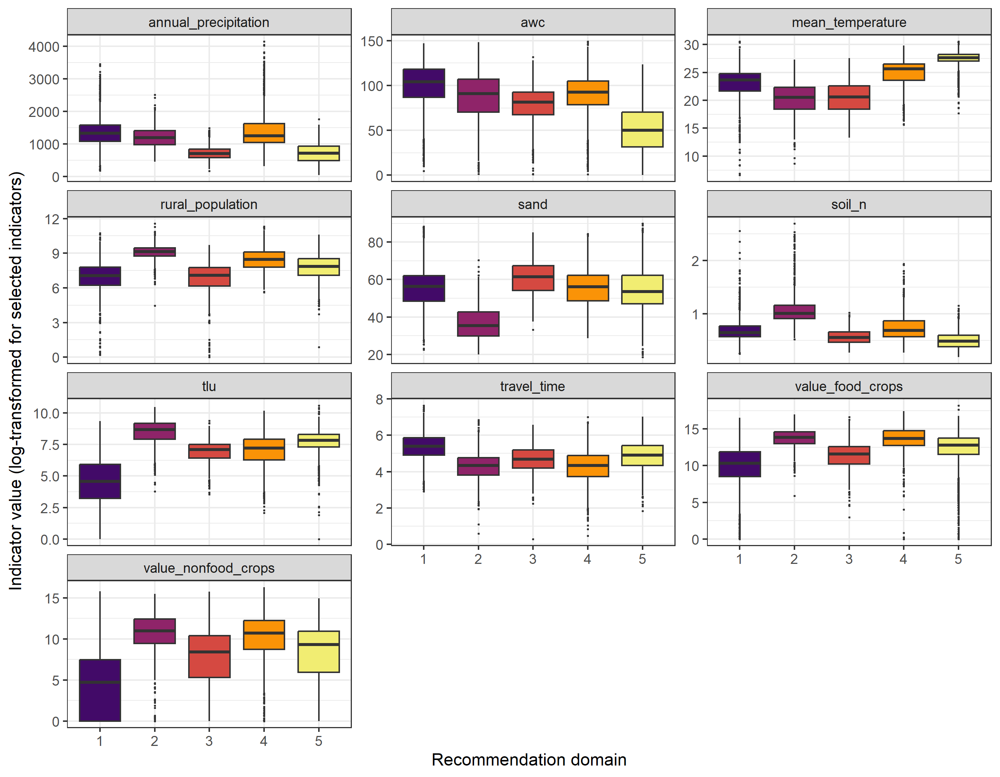

Chapter 11 Spatial recommendation domains
This chapter presents a spatial clustering approach to delineating recommendation domains based on biophysical and socioeconomic characteristics, supporting the targeting of research and development activities.
11.1 Introduction
Recommendation domains are sections of landscapes sharing similar biophysical and socioeconomic characteristics, where specific interventions (e.g., technologies, policies, investments) are likely to be effective (Notenbaert et al. 2013; Muthoni et al. 2017). Delineating such domains can help identify areas with similar agricultural conditions and challenges, and support the targeting of research, development and investment strategies.
One of the geospatial approaches that can be used to delineate recommendation domains is the ‘top-down approach’, which is a deductive method of clustering using available gridded geospatial layers (Muthoni et al. 2017). These include biophysical conditions, such as soil properties and climate, as well as socioeconomic factors, such as livestock ownership, rural population, agricultural production value and accessibility.
Here, we apply the approach to sub-Saharan Africa (restricted to cropland), using 10 indicators.
The workflow has three main stages:
- Preparing and harmonizing the spatial datasets, including transforming and standardizing indicators to make them comparable;
- Delineating recommendation domains by applying principal component analysis and hierarchical clustering to a random sample of valid cropland cells, and extrapolating the resulting classification across the study area using a random forest model;
- Characterizing and mapping the resulting domains using the original indicators, including their spatial extent, cropland area and rural population.
The resulting domains are intended as a framework for spatial targeting, rather than as prescriptive recommendations for particular interventions. Their interpretation therefore requires consideration of the characteristics and constraints represented by the underlying indicators.
A standalone R script containing the workflow is available here: https://github.com/FBaudron/book_standardized_workflows/blob/main/11-spatial_recommendation_domains/spatial_recommendation_domains.R.
We first load the necessary packages.
if (!require("terra")) install.packages("terra")
if (!require("geodata")) install.packages("geodata")
if (!require("sf")) install.packages("sf")
if (!require("dplyr")) install.packages("dplyr")
if (!require("tidyr")) install.packages("tidyr")
if (!require("ggplot2")) install.packages("ggplot2")
if (!require("ade4")) install.packages("ade4")
if (!require("factoextra")) install.packages("factoextra")
if (!require("randomForest")) install.packages("randomForest")
if (!require("ggspatial")) install.packages("ggspatial")
if (!require("tidyterra")) install.packages("tidyterra")
if (!require("knitr")) install.packages("knitr")
if (!require("MASS")) install.packages("MASS")
if (!require("cluster")) install.packages("cluster")
library(terra)
library(geodata)
library(sf)
library(dplyr)
library(tidyr)
library(ggplot2)
library(ade4)
library(factoextra)
library(randomForest)
library(ggspatial)
library(tidyterra)
library(knitr)
library(MASS)
library(cluster)
set.seed(123)11.2 Preparing the data
11.2.1 Indicator stack
The shapefiles and rasters required for the analysis were produced in Chapter 3. They can also be downloaded here: https://www.dropbox.com/scl/fo/hdfjnxt05c7tyf2rkgm23/AMkKt6PRDyLops16iksFk68?rlkey=ppdlzleowakrd6apn666retvw&st=ul9fo7p3&dl=0.
ssa = vect("Data/Spatial/Processed/ssa.shp")
cropland_fraction = rast("Data/Spatial/Processed/cropland.tif")
cropmask = rast("Data/Spatial/Processed/cropmask.tif")
sand = rast("Data/Spatial/Processed/sand.tif")
soil_n = rast("Data/Spatial/Processed/soil_n.tif")
awc = rast("Data/Spatial/Processed/pawc.tif")
mean_temperature = rast("Data/Spatial/Processed/tavg.tif")
annual_precipitation = rast("Data/Spatial/Processed/prec.tif")
tlu = rast("Data/Spatial/Processed/tlu.tif")
rural_population = rast("Data/Spatial/Processed/rural_population.tif")
value_food_crops = rast("Data/Spatial/Processed/value_food_crops.tif")
value_nonfood_crops = rast("Data/Spatial/Processed/value_nonfood_crops.tif")
travel_time = rast("Data/Spatial/Processed/travel_time.tif")
indicator_stack = c(sand, soil_n, awc, mean_temperature, annual_precipitation, tlu,
rural_population, value_food_crops, value_nonfood_crops, travel_time)
names(indicator_stack) = c("sand", "soil_n", "awc", "mean_temperature", "annual_precipitation",
"tlu", "rural_population", "value_food_crops", "value_nonfood_crops", "travel_time")
plot(indicator_stack)
11.2.2 Transformation and standardisation of the data
To reduce the influence of extreme values, we plot histograms of continuous variables, and when distribution departs too much from a Gaussian distribution, we log-transform the variable.
In our case, soil_n, tlu, rural_population, value_food_crops, value_nonfood_crops, and travel_time have distributions that depart markedly from a Gaussian ones.
terra::hist(indicator_stack, main = "Indicator distributions")
We log-transform strongly right-skewed indicators, using log1p(), which handles zero values without requiring an arbitrary offset. We create first a copy of the raster stack before data transformation.
indicator_transformed = indicator_stack
vars_log = c("soil_n", "tlu", "rural_population", "value_food_crops", "value_nonfood_crops",
"travel_time")
for (v in vars_log) {
indicator_transformed[[v]] = log1p(indicator_transformed[[v]])
}We inspect transformed variables to verify that the transformations behaved as expected.
terra::hist(indicator_transformed, main = "Indicator distributions after transformation")
The indicators are measured in different units and have different numerical ranges. They are therefore standardized using Z-scores before clustering.
For each indicator \(k\), the standardized value is:
\[ z_{pk} = \frac{x_{pk} - \mu_k}{\sigma_k} \]
where \(x_{pk}\) is the value of indicator \(k\) in pixel \(p\), and \(\mu_k\) and \(\sigma_k\) are the mean and standard deviation of that indicator across the analysis domain.
indicator_means = global(indicator_transformed, "mean", na.rm = TRUE)
indicator_sds = global(indicator_transformed, "sd", na.rm = TRUE)
indicator_means = as.numeric(indicator_means[, 1])
indicator_sds = as.numeric(indicator_sds[, 1])
indicator_z = (indicator_transformed - indicator_means)/indicator_sds
names(indicator_z) = paste0(names(indicator_transformed), "_z")11.3 Clustering
We take a random sample of 10,000 cropland grid cells (as a computational efficiency measure) and retain only cells without any missing values.
set.seed(123)
pca_sample = spatSample(indicator_z, size = 10000, method = "random", na.rm = TRUE,
as.df = TRUE, xy = TRUE)
pca_sample = na.omit(pca_sample)
nrow(pca_sample)[1] 10000To reduce colinearity among predictors and simplify clustering, we perform a Principal Component Analysis (PCA) on the sampled grid cells using the function dudi.pca() from the R package ade4 (Thioulouse et al. (2018)). PCA summarizes the dominant environmental and socioeconomic gradients structuring the landscape, while retaining most of the information contained in the original variables.
Following the Kaiser rule, we retain only principal components with eigenvalues greater than 1, resulting in two principal components used for subsequent clustering.
pca = dudi.pca(pca_sample[, -c(1:2)], scannf = FALSE, nf = 4)
eigenvalues = data.frame(eigenvalue = pca$eig, axis = paste0("Axis", seq_along(pca$eig)))
eigenvalues %>%
knitr::kable(digits = 3, booktabs = TRUE, col.names = c("Eigenvalue", "Principal component"),
caption = "Eigenvalues of the initial PCA")| Eigenvalue | Principal component |
|---|---|
| 2.709 | Axis1 |
| 2.143 | Axis2 |
| 1.238 | Axis3 |
| 1.030 | Axis4 |
| 0.824 | Axis5 |
| 0.565 | Axis6 |
| 0.454 | Axis7 |
| 0.378 | Axis8 |
| 0.350 | Axis9 |
| 0.309 | Axis10 |
fviz_pca_var(pca, col.var = "contrib") + scale_color_gradient2(low = "blue", mid = "purple",
high = "red", midpoint = 9) + theme_minimal()
fviz_pca_ind(pca)
The PCA model fitted to the sample is projected onto the complete standardized raster stack. This produces two rasters representing the first two principal component scores for every valid cropland pixel.
pc_raster = terra::predict(indicator_z, pca)
names(pc_raster) = c("pc1", "pc2", "pc3", "pc4")
plot(pc_raster)
Hierarchical clustering is conducted on the PCA scores of the filtered sample. Ward’s minimum variance method (ward.D2) is used to group observations while minimizing within-cluster variation.
pc_scores = pca$li
hclust_model = hclust(dist(pc_scores), method = "ward.D2")
plot(hclust_model, hang = -1, labels = FALSE, main = "Ward hierarchical clustering",
xlab = "", sub = "")
We determine the optimal number of domains using average silhouette width, using the same distance matrix used to build hclust_model.
We select the number of domains based on high(est) average silhouette width and interpretable domains (avoiding domains that are too small)
k_values = 3:10
sil_width = numeric(length(k_values))
for (i in seq_along(k_values)) {
k = k_values[i]
cluster_membership = cutree(hclust_model, k = k)
sil = silhouette(cluster_membership, dist(pc_scores))
sil_width[i] = mean(sil[, "sil_width"])
}
best_k = k_values[which.max(sil_width)]
plot(k_values, sil_width, type = "b", pch = 19, xlab = "Number of domains", ylab = "Average silhouette width")
k = 5
domains = cutree(hclust_model, k = k)
table(domains)domains
1 2 3 4 5
3077 930 1203 2180 2610 11.4 Train a random forest classifier
The hierarchical clustering provides group membership for the sampled observations. A random forest classifier is trained to predict those groups from the PCA axes. This model is then used to assign every valid cropland pixel to one of the k domains. This random forest is a spatial extrapolation model using PCs as predictors, not the original indicators.
The random forest model showed good classification performance, with a low overall out-of-bag (OOB) error rate of 3.94%. Class-specific error rates were also low across all three clusters, ranging from 2.6% for Domain 5 to 7.3% for Domain 3, indicating that domain membership could be reliably predicted from the four PCA axes.
rf_training = data.frame(pc1 = pc_scores[, 1], pc2 = pc_scores[, 2], pc3 = pc_scores[,
3], pc4 = pc_scores[, 4], cluster = as.factor(domains))
set.seed(123)
rf_model = randomForest(cluster ~ pc1 + pc2 + pc3 + pc4, data = rf_training, importance = TRUE)
print(rf_model)
Call:
randomForest(formula = cluster ~ pc1 + pc2 + pc3 + pc4, data = rf_training, importance = TRUE)
Type of random forest: classification
Number of trees: 500
No. of variables tried at each split: 2
OOB estimate of error rate: 3.94%
Confusion matrix:
1 2 3 4 5 class.error
1 2963 4 39 60 11 0.03704907
2 2 899 6 19 4 0.03333333
3 45 6 1115 19 18 0.07315046
4 45 9 9 2088 29 0.04220183
5 18 3 11 37 2541 0.02643678The trained classifier is projected onto the two PCA rasters.
domain_raster = terra::predict(pc_raster, rf_model, type = "response")
names(domain_raster) = "domain"
domain_raster = mask(domain_raster, cropmask)
# Convert domain values to a categorical raster
domain_raster = as.factor(domain_raster)
ggplot() + geom_spatraster(data = domain_raster) + geom_spatvector(data = ssa, fill = NA,
color = "black", linewidth = 0.3) + scale_fill_viridis_d(option = "inferno",
begin = 0.2, end = 0.95, name = "Domain", na.value = "transparent", na.translate = FALSE) +
coord_sf() + labs(title = "Recommendation domains across Sub-Saharan Africa") +
theme_bw() + theme(plot.title = element_text(size = 14, face = "bold"), legend.position = "right",
legend.title = element_text(size = 11), legend.text = element_text(size = 10),
axis.title = element_blank(), panel.background = element_rect(fill = "white",
color = NA), plot.background = element_rect(fill = "white", color = NA)) +
annotation_scale(location = "br", width_hint = 0.3) + annotation_north_arrow(location = "tl",
which_north = "true", style = north_arrow_fancy_orienteering())
11.5 Interpretation of the domains
We fit a second random forest, which uses the mapped domain as the response and the original, untransformed predictor rasters as explanatory variables. Variable importance is assessed using the Mean Decrease in Gini index.
Extracting every pixel from the 11-layer stack (domain plus 11 indicators) into memory may be prohibitively demanding. The code below therefore draws a random sample of 10,000 valid mapped pixels.
The Mean Decrease in Gini index indicates how much each original indicator contributes to the separation of the mapped domains in this Random Forest model. It is a measure of predictive importance within this classification, not a causal measure of the influence of an indicator on agricultural systems. Correlated predictors can also share or redistribute importance. Mean temperature, livestock ownership, and annual precipitation appear as the most discriminating variables.
set.seed(123)
importance_stack = c(domain_raster, indicator_stack)
names(importance_stack)[1] = "domain"
importance_sample = spatSample(importance_stack, size = 10000, method = "random",
na.rm = TRUE, as.df = TRUE)
importance_sample = na.omit(importance_sample)
importance_sample$domain = as.factor(importance_sample$domain)
rf_indicator_importance = randomForest(domain ~ ., data = importance_sample, importance = TRUE)
# Extract MeanDecreaseGini variable importance
importance_gini = randomForest::importance(rf_indicator_importance)[, "MeanDecreaseGini"]
# Plot variable importance
varImpPlot(rf_indicator_importance, type = 2, main = "Variable importance (MeanDecreaseGini)")
The domains are characterized using the original, untransformed indicators. This makes the domain profiles easier to interpret in their original units. The classification is predicted across the full cropland mask, so the characterization should use the full predicted domain raster rather than only the observations used to train the classifier.
For large continental rasters, extracting every pixel into memory can be demanding. The following sections use terra::zonal() for summary statistics and a random sample for boxplots.
11.6 Indicator summaries by domain
domain_means = zonal(indicator_stack, domain_raster, fun = "mean", na.rm = TRUE)
domain_sds = zonal(indicator_stack, domain_raster, fun = "sd", na.rm = TRUE)
domain_means %>%
knitr::kable(digits = 2, format = "html", caption = "Mean indicator values by spatial domain")| domain | sand | soil_n | awc | mean_temperature | annual_precipitation | tlu | rural_population | value_food_crops | value_nonfood_crops | travel_time |
|---|---|---|---|---|---|---|---|---|---|---|
| 1 | 55.46 | 1.02 | 99.42 | 23.09 | 1350.98 | 334.06 | 2059.58 | 185721.9 | 8666.22 | 269.71 |
| 2 | 36.11 | 2.12 | 86.75 | 20.03 | 1206.67 | 6846.29 | 10078.80 | 2014351.4 | 277483.69 | 93.75 |
| 3 | 60.75 | 0.79 | 79.76 | 20.27 | 729.66 | 1451.22 | 1697.85 | 330089.1 | 49312.08 | 131.09 |
| 4 | 55.52 | 1.14 | 89.25 | 24.80 | 1388.58 | 2040.74 | 7106.58 | 2085196.6 | 268474.44 | 101.27 |
| 5 | 55.28 | 0.67 | 51.05 | 27.39 | 723.84 | 3073.61 | 4000.54 | 816263.8 | 87327.61 | 168.69 |
domain_sds %>%
knitr::kable(digits = 2, format = "html", caption = "Standard deviations of indicators by spatial domain")| domain | sand | soil_n | awc | mean_temperature | annual_precipitation | tlu | rural_population | value_food_crops | value_nonfood_crops | travel_time |
|---|---|---|---|---|---|---|---|---|---|---|
| 1 | 10.66 | 0.46 | 24.76 | 2.50 | 401.30 | 629.19 | 3156.11 | 555066.7 | 80177.26 | 205.67 |
| 2 | 8.60 | 1.41 | 27.33 | 3.15 | 335.67 | 5437.65 | 6983.16 | 3076679.2 | 746188.04 | 83.18 |
| 3 | 9.34 | 0.25 | 22.13 | 2.86 | 209.54 | 1232.82 | 1946.40 | 990548.7 | 211869.58 | 99.09 |
| 4 | 9.95 | 0.58 | 22.79 | 2.34 | 574.86 | 2402.59 | 7654.55 | 3122042.2 | 623752.16 | 97.23 |
| 5 | 12.16 | 0.26 | 24.38 | 1.50 | 283.48 | 2858.37 | 4918.08 | 1623033.8 | 300284.62 | 139.05 |
Boxplots are used to compare the distributions of the original indicators across recommendation domains. For strongly right-skewed indicators, values are log-transformed using log1p() to improve visualisation while retaining zero values. To avoid extracting the complete continental raster into memory, a random sample is used. This changes the number of observations used to draw the boxplots, but not the indicators or grouping variable.
set.seed(123)
# Sample cells from the domain and indicator rasters
domain_indicator_stack = c(domain_raster, indicator_stack)
domain_indicator_sample = spatSample(domain_indicator_stack, size = 10000, method = "random",
na.rm = TRUE, as.df = TRUE)
domain_indicator_sample$domain = factor(domain_indicator_sample$domain, levels = 1:k)
# Reshape data into long format
domain_indicator_long = domain_indicator_sample |>
pivot_longer(cols = all_of(names(indicator_stack)), names_to = "indicator", values_to = "value")
# Indicators displayed on a log-transformed scale
log_indicators = c("rural_population", "soil_n", "tlu", "travel_time", "value_food_crops",
"value_nonfood_crops")
domain_indicator_long = domain_indicator_long |>
mutate(value_plot = ifelse(indicator %in% log_indicators, log1p(value), value))
# Plot distributions by recommendation domain
ggplot(domain_indicator_long, aes(x = domain, y = value_plot, fill = domain)) + geom_boxplot(outlier.size = 0.2,
show.legend = FALSE) + scale_fill_viridis_d(option = "inferno", begin = 0.2,
end = 0.95, name = "Domain") + facet_wrap(~indicator, scales = "free_y", ncol = 3) +
labs(x = "Recommendation domain", y = "Indicator value (log-transformed for selected indicators)") +
theme_bw()
The area of each domain is calculated from the area of its raster cells. We also estimate cropland area by weighting pixel area by the cropland fraction. This assumes that the cropland fraction raster is expressed either as a proportion (0–1) or a percentage (0–100); the code checks its maximum value to determine the appropriate divisor.
# Geographical area of each recommendation domain
pixel_area_km2 = cellSize(domain_raster, unit = "km")
# Cropland area: convert hectares per pixel to km²
cropland_area_km2 = cropland_fraction/100
# Sum geographical and cropland areas by domain
area_by_domain = zonal(c(pixel_area_km2, cropland_area_km2), domain_raster, fun = "sum",
na.rm = TRUE)
names(area_by_domain) = c("domain", "geographical_area_km2", "cropland_area_km2")
area_by_domain %>%
knitr::kable(digits = 0, booktabs = TRUE, caption = "Geographical and cropland areas by recommendation domain")| domain | geographical_area_km2 | cropland_area_km2 |
|---|---|---|
| 1 | 2785382 | 228694 |
| 2 | 792625 | 287638 |
| 3 | 1061372 | 134997 |
| 4 | 2001732 | 620716 |
| 5 | 2392001 | 611374 |
The rural population represented by each domain is estimated by summing the population raster within each predicted domain.
population_by_domain = zonal(rural_population, domain_raster, fun = "sum", na.rm = TRUE)
names(population_by_domain) = c("domain", "rural_population")
population_by_domain %>%
knitr::kable(digits = 0, booktabs = TRUE, caption = "Rural population by recommendation domain")| domain | rural_population |
|---|---|
| 1 | 68281128 |
| 2 | 94498836 |
| 3 | 22435397 |
| 4 | 169342614 |
| 5 | 114507493 |